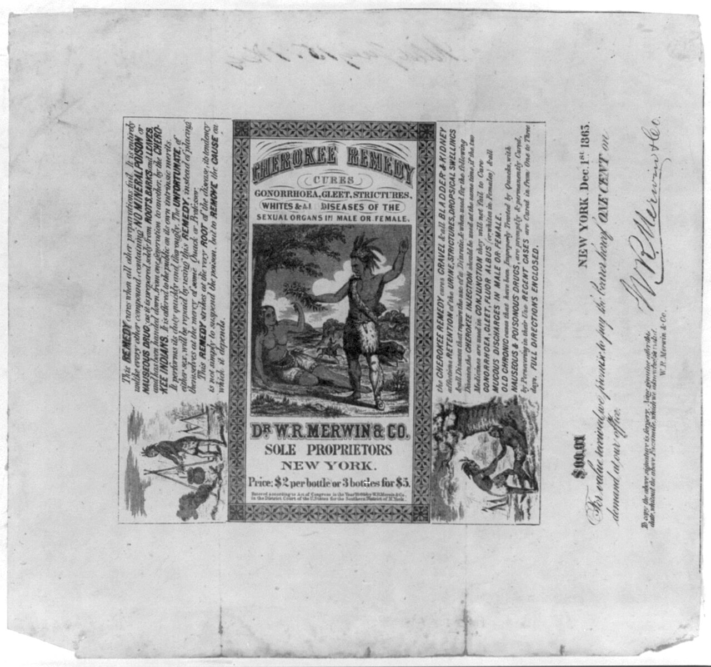
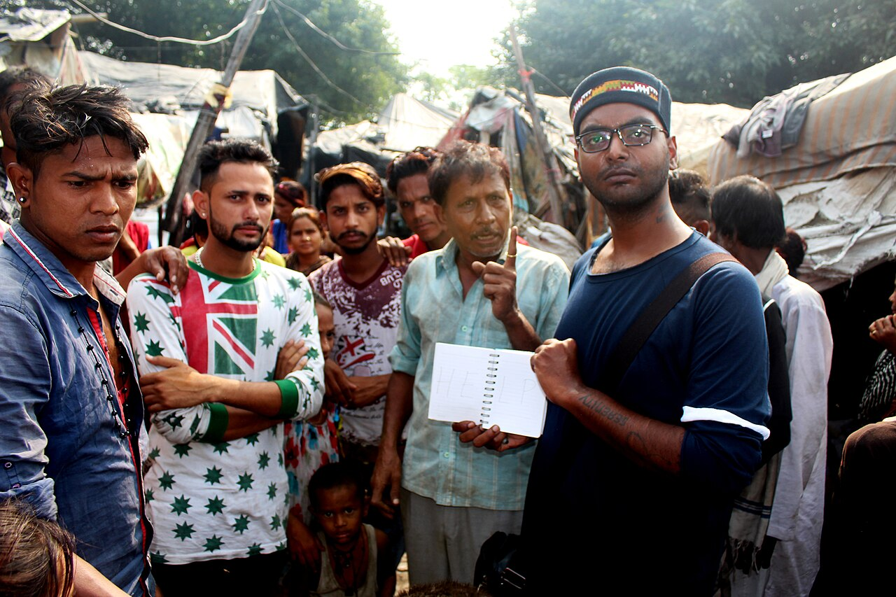
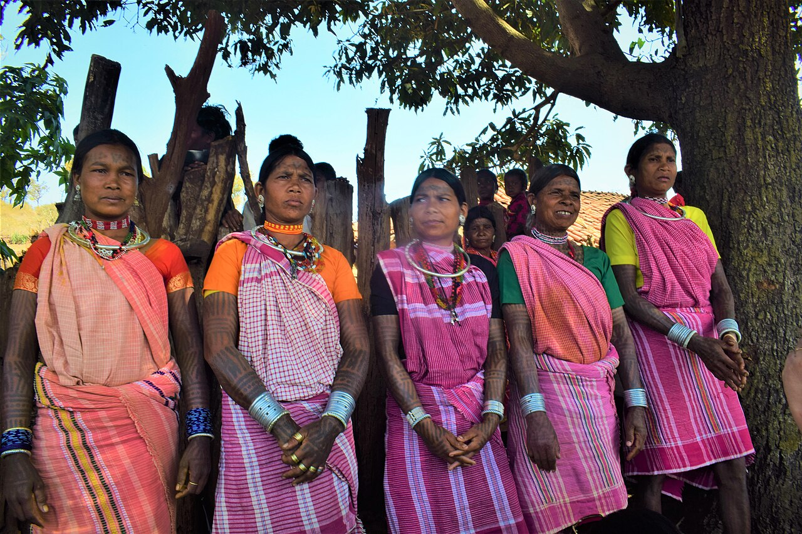

Health & Medical Anthropology
A body breaks down in every society on earth, but no two societies break it down the same way. What counts as a symptom, who is qualified to name it, whether the cause lies in a microbe or a broken promise or an envious neighbor, and what the sufferer is owed by everyone else — all of that is culture, not biology. Medical anthropology is the study of that gap between the fact of a suffering body and the enormous, varied, deadly serious machinery a society builds around it. It is the branch of the discipline where fieldwork most often changes what happens to real patients: it has redesigned burial teams in an Ebola epidemic, rewritten psychiatric diagnostic manuals, and put multidrug-resistant tuberculosis treatment into villages that global health economists had written off. This chapter shows you how anthropologists think about sickness, healing, healers, and the body itself.
By the end of this chapter you can
- Distinguish disease, illness, and sickness, and explain why the distinction changes clinical practice.
- Use Arthur Kleinman's explanatory model framework and apply the emic/etic distinction to illness categories such as susto and nervios.
- Contrast naturalistic and personalistic etiologies and identify ethnomedical healing roles across band, tribe, chiefdom, and state societies.
- Explain medical pluralism, Kleinman's three sectors of health care, and the idea of hierarchies of resort.
- Argue why biomedicine is itself a cultural system with its own rituals, metaphors, and blind spots.
- Apply structural violence, syndemic theory, and structural competency to real global health failures.
- Describe embodiment, habitus, and the three bodies, and analyze childbirth as a rite of passage in van Gennep's and Turner's terms.
- Evaluate, respectfully and without romance or condescension, healing practices very different from your own.
Section 1Culture and illness

Disease, illness, and sickness
Ordinary English collapses three very different things into one word. Medical anthropology pulls them apart, following a distinction sharpened by Arthur Kleinman and Allan Young. Disease is the practitioner's object: a biological malfunction defined by a professional system — a fasting glucose of 260, an infiltrate on a chest film, a tumor with a stage. Illness is the sufferer's experience: what it feels like to be unwell, what the person believes is happening, what it costs them at home and at work. Sickness is the social fact: the way a whole society recognizes, labels, funds, stigmatizes, or ignores a condition — why one disorder gets a fun-run and a ribbon and another gets a shrug.
Notice that the three can move independently, and that most trouble in clinics lives in the gaps. A person can have disease without illness (hypertension for a decade with no sensation of anything wrong — which is exactly why medication adherence is so poor). A person can have illness without demonstrable disease (chronic fatigue, chronic pain, or the vast category once dismissed as "functional"), and be disbelieved for it. And sickness can be manufactured or withheld by politics: HIV in the early 1980s was catastrophic disease and shattering illness long before it was granted the social recognition that funds research and protects the dying.
| Term | Whose reality | Defined by | Example |
|---|---|---|---|
| Disease | The practitioner's | A professional diagnostic system | "Stage II adenocarcinoma" |
| Illness | The sufferer's | Lived experience and local meaning | "A weight in my chest that came after my brother died" |
| Sickness | The society's | Recognition, stigma, policy, money | Who gets disability status, research funding, or blame |
Explanatory models and the "why me, why now" question
Kleinman's most portable tool is the explanatory model (EM): the account a person carries about their own condition — its cause, its timing, its mechanism, its expected course, and what should be done about it. Everyone has one, including the clinician; the clinician's just happens to be institutionally backed. When the patient's EM and the practitioner's EM do not touch at any point, the encounter fails no matter how correct the prescription is. Kleinman's Patients and Healers in the Context of Culture (1980) proposed eight simple questions — what do you call it, what do you think caused it, why did it start when it did, what does it do to you, how severe is it, what do you fear most about it, what problems has it caused you, what treatment should you receive — and those questions have quietly restructured how good clinicians open an interview.
Biomedicine is unusually strong at how and unusually weak at why me. It can explain the mechanism of a stroke in exquisite detail and has nothing whatsoever to say about why it happened to this person at this moment. Most of the world's medical systems answer that second question first. E.E. Evans-Pritchard's classic Witchcraft, Oracles and Magic Among the Azande (1937) makes the point permanently: when a granary collapsed on people sitting in its shade, the Azande knew perfectly well that termites had eaten the supports. What witchcraft explained was the coincidence — why these people were sitting there at that moment. Azande theory does not compete with a mechanical explanation; it supplies the layer biomedicine leaves empty. Clifford Geertz, in "Religion as a Cultural System," called this the problem of suffering: the demand is not that pain be avoided but that it be made sufferable — that it be given a shape a person can bear.
Emic categories and the trouble with translation
An emic account uses the categories of the people themselves; an etic account uses the analyst's comparative categories. Illness is where this distinction earns its keep, because emic categories are not merely quaint labels for etic diseases — they carve the world differently. Susto, widely reported across Latin America, is soul loss following a fright, presenting with listlessness, appetite loss, and sleep disturbance. Arthur Rubel and colleagues studied it epidemiologically in Mexico and found that people identified as suffering susto had measurably worse outcomes, including higher mortality, than matched controls — the category was tracking something real about distressed, socially strained bodies, even though no etic label mapped onto it cleanly. Mark Nichter's term idiom of distress names the general phenomenon: cultures supply a vocabulary — somatic, spiritual, or psychological — through which suffering is legitimately expressed. In some places you may say your nerves are bad; in others you may say your stomach burns; in others you may say a spirit has entered.
The older label culture-bound syndrome has largely been retired, and for a good reason: it implied that exotic people have culture while biomedicine has facts. The DSM-5 replaced it with cultural concepts of distress and added a Cultural Formulation Interview — effectively Kleinman's questions, formalized. The reframing cuts both ways. Anorexia nervosa, with its specific pursuit of thinness, is now widely analyzed as a condition shaped by particular Euro-American body ideals — Anne Becker's Fiji research tracked disordered eating rising after television arrived — and Kleinman and Byron Good's Culture and Depression (1985) pressed the same argument about the way Western psychiatry has exported depression as a universal.
| Cultural concept of distress | Where reported | Emic account | What an etic gloss misses |
|---|---|---|---|
| Susto | Latin America | Soul loss after a frightening event | The social strain and role failure that precede it |
| Nervios / ataque de nervios | Latin America, Caribbean | Nerves overwhelmed by loss, threat, or family conflict | That it is a legitimate public claim for help, not a private pathology |
| Hwa-byung | Korea | "Fire illness" from swallowed anger and injustice | The moral accusation embedded in the complaint |
| Shenjing shuairuo | China | "Neurasthenia" — weakness of the nerves | Kleinman showed it carried distress that was politically unsafe to name |
| Qaug dab peg | Hmong communities | "The spirit catches you and you fall down" | That it can mark a child as spiritually gifted, not only afflicted |
- Disease (practitioner's object), illness (sufferer's experience), and sickness (society's recognition) come apart, and most clinical failure lives in the gaps.
- An explanatory model is anyone's working account of cause, timing, course, and cure — clinicians have them too.
- Biomedicine answers how; most medical systems answer why me, why now first — Evans-Pritchard's Azande and Geertz's "problem of suffering."
- Emic categories such as susto are not decorated versions of etic diseases; they cut reality differently, and they predict real outcomes.
Section 2Ethnomedicine

Naturalistic and personalistic etiologies
Ethnomedicine is the study of any society's health beliefs, practices, and practitioners — including, properly understood, our own. George Foster and Barbara Anderson gave the field a durable sorting principle by distinguishing two families of explanation. In a naturalistic etiology, illness follows from an impersonal imbalance: humors out of proportion, hot and cold food misaligned with a hot or cold condition, qi obstructed along a meridian, dosha deranged. In a personalistic etiology, illness is the deliberate work of an agent: a witch, a sorcerer, an offended ancestor, a spirit whose territory you crossed, a person you wronged. The two coexist comfortably almost everywhere, including in a modern hospital where a patient may accept the oncologist's staging entirely and still believe, privately, that the cancer arrived because of something someone did.
Naturalistic systems can be spectacularly elaborate. Ayurveda organizes the body around three doshas — vata, pitta, kapha — and prescribes diet, regimen, and compound preparations to restore proportion. Classical Chinese medicine maps a circulatory system of qi through channels that appear nowhere in a dissection, and reasons from yin–yang balance. Greco-Islamic humoral theory — blood, phlegm, yellow bile, black bile — ruled European practice for two millennia and survives as Unani medicine in South Asia. Hot–cold classifications across Latin America and the Caribbean are the practical descendant of that same logic, and they matter clinically: a patient who classifies a condition as "hot" may refuse a medicine classified as hot, and will look, to an unprepared clinician, simply noncompliant.
The healer and the healer's toolkit
The word shaman comes from Evenki (Tungusic) Siberia and has been stretched, often carelessly, to cover part-time religious specialists worldwide who enter altered states to negotiate with spirits on a patient's behalf. Used carefully it is still useful, and it is worth holding it against its opposite number. Anthony F. C. Wallace's standard contrast sets the shaman — part-time, called rather than appointed, trained by vision or apprenticeship, working on individual clients in trance — against the priest, who is full-time, formally installed in an office that outlives whoever holds it, trained in a fixed liturgy, and acting for the whole community rather than for one sufferer. Shamans predominate where political organization is small and fluid; priesthoods appear with chiefdoms and states, because a full-time office has to be paid for. The two coexist often enough, and the boundary is a gradient, not a wall. The classic account is Claude Lévi-Strauss's pair of essays from 1949. In "The Sorcerer and His Magic," he retells the autobiography of Quesalid, a Kwakwaka'wakw man recorded in Franz Boas's texts, who apprenticed as a healer specifically in order to expose the fraud — learned the trick of the concealed bloody down spat out as the extracted illness — and then found that his patients recovered, that he was a better healer than his rivals, and that his skepticism had nowhere left to stand. In "The Effectiveness of Symbols," Lévi-Strauss analyzes a Guna (Cuna) shaman's chant for obstructed labor, which narrates a journey along the birth path and, he argued, gives the laboring woman a language for otherwise formless pain, allowing the body to reorganize around it. Both essays are about the same claim: symbols do work in bodies. Modern research on the meaning response, argued at length by Daniel Moerman, is the same insight with a control group attached.
Alongside the shaman sit herbalists, bonesetters, birth attendants, diviners, and ritual specialists, and their pharmacopoeias have repeatedly turned out to be right. James Frazer's The Golden Bough catalogued the reasoning behind much of it as sympathetic magic, in two forms: homeopathic (like produces like — the doctrine of signatures that treats a walnut-shaped kernel as good for the brain) and contagious (things once in contact stay connected — hence the care taken with hair clippings and nail parings). Frazer treated this as failed science; anthropology since has treated it as a coherent logic of resemblance and connection that happens, in some hands, to produce excellent empirical results. Bronisław Malinowski, working in the Trobriand Islands, added a further mechanism: Trobrianders used elaborate magic for dangerous open-sea voyaging and almost none for safe lagoon fishing. Magic clusters where uncertainty and stakes are both high — which is precisely where serious illness lives.
Who becomes a healer, and who pays
Healing roles scale with political complexity, which is one of the tidiest places in anthropology to see Elman Service's band–tribe–chiefdom–state typology do real work. (Treat it as a rough ladder of scale and centralization, not a march of progress; real societies sit between the rungs.) In small foraging bands the healer is part-time and unpaid in any formal sense, embedded in the generalized reciprocity that Marshall Sahlins described as the glue already binding everyone. In tribal societies, healing tends to be organized into cults of affliction — those who have suffered a condition become the specialists who treat it. Chiefdoms support full-time ritual specialists through redistribution: goods flow to a center and back out, and the healer-priest is fed by that flow. States license professions, build hospitals, and pay through market exchange or taxation, which is also how they acquire the power to declare rival healers illegal.
Descent matters too. Victor Turner's Ndembu ethnography in Zambia — The Drums of Affliction, The Forest of Symbols — is the deepest study of this. Ndembu villages combined matrilineal descent with a strong pull toward virilocal residence, a structural contradiction that generated chronic tension between a man's obligations to his sister's children and his desire to keep his own wife and children near him. When someone fell ill, the diviner and the chimbuki (ritual doctor) read that illness as a symptom of the group. The Ihamba ritual sought a dead hunter's tooth lodged in the sufferer's body, but its real machinery was a public airing of grudges: the tooth would not come out until the assembled kin had spoken their resentments aloud. Turner's formulation is worth memorizing — the Ndembu doctor treats not a patient but a disturbed set of social relationships, of which the patient is the visible sign.
| Society type | Typical healing role | How the healer is supported | Ethnographic example |
|---|---|---|---|
| Band | Part-time shaman; everyone holds some plant knowledge | Generalized reciprocity — no accounting | Ju/'hoansi n/um healing dance |
| Tribe | Diviner plus cult of affliction; sufferers become specialists | Balanced reciprocity — gifts, feasts, obligation | Ndembu chimbuki and Ihamba (Turner) |
| Chiefdom | Full-time priest-healer attached to a ranked center | Redistribution through the chief | Polynesian ritual specialists under tapu |
| State | Licensed professions, hospitals, public health bureaucracy | Market exchange, insurance, taxation | Physicians, and the laws that define who is not one |
- Naturalistic etiologies blame impersonal imbalance (humors, hot/cold, qi, dosha); personalistic etiologies blame an agent. Most people hold both.
- Shamans are part-time, called, and work on individual clients in trance; priests hold a full-time office that outlives them and act for the whole community — which is why priesthoods need chiefdoms and states to pay for them.
- Lévi-Strauss (via Boas's Quesalid text and the Guna birth chant) argued that symbols do measurable work in bodies — the ancestor of research on the meaning response.
- Frazer's sympathetic magic (homeopathic and contagious) and Malinowski's uncertainty argument explain the logic of healing practice, not merely its content.
- Healing roles track political scale — band/tribe/chiefdom/state — and are paid through reciprocity, redistribution, or market exchange.
- Turner's Ndembu: the ritual doctor treats a disturbed set of social relations, and matrilineal descent under virilocal residence supplies the tension he reads.
Section 3Medical pluralism
Three sectors, one patient
Medical pluralism — a term brought into focus by Charles Leslie's Asian Medical Systems (1976) — is the ordinary condition of nearly every society: several medical systems operating at once, with different theories, different practitioners, and different claims to legitimacy. Kleinman organized the field into three sectors of health care. The popular sector is family and self-care: the mother who decides whether this fever is worth an appointment, the aunt consulted first, the internet search, the leftover antibiotics in the drawer. This is where an estimated 70–90 percent of all illness episodes worldwide begin and end, and it is the sector clinicians see least and understand worst. The folk sector holds non-professionalized specialists — herbalists, bonesetters, birth attendants, spiritual healers. The professional sector is the legally sanctioned, credentialed system, which in most countries means biomedicine but in India also means registered Ayurvedic and Unani practitioners.
| Sector | Who | Basis of authority | Share of illness episodes |
|---|---|---|---|
| Popular | Self, family, neighbors, community networks | Experience, kinship, common sense | The large majority — most episodes never leave it |
| Folk | Herbalists, bonesetters, birth attendants, diviners, shamans | Apprenticeship, calling, community reputation | Substantial, and often consulted in parallel with clinics |
| Professional | Licensed practitioners of a state-recognized system | Credential, statute, institution | A minority of episodes, but most of the money and prestige |
Hierarchies of resort: what people actually do
Patients are not loyalists. They are pragmatists who move between systems, often simultaneously, in a pattern anthropologists call a hierarchy of resort. The order depends on cost, distance, the perceived cause, previous results, and who in the family is making the decision. A common pattern across much of the world runs: home remedy first, then the local pharmacist or drug seller, then a folk healer if the illness resists or if its cause is suspected to be personalistic, then the clinic, then back to the healer if the clinic fails to explain why. Crucially, people frequently see no contradiction in this. A Ghanaian patient may take antimalarials exactly as prescribed while also consulting about who sent the illness; the first addresses the parasite, the second addresses the malice. Asking a patient to choose is asking them to abandon half of what they need.
States respond to pluralism in different ways. India's AYUSH ministry gives Ayurveda, Yoga and naturopathy, Unani, Siddha, and Homoeopathy formal standing, degree programs, and hospitals. China integrated traditional Chinese medicine into the state system, most famously through the barefoot doctor program, and today runs integrative hospitals in which both systems are billed. The WHO's Alma-Ata Declaration of 1978, which set the goal of health for all through primary health care, explicitly recognized traditional practitioners as part of the workforce — a rare moment of official humility. Elsewhere, states have criminalized traditional healing, which reliably drives it underground rather than ending it.
Biomedicine is also an ethnomedicine
The most productive move medical anthropology ever made was to turn its gaze back on the clinic. Biomedicine — the term itself is deliberate, marking it as one system among several rather than as "medicine" full stop — is a cultural system with a cosmology (the body as a machine of separable parts), a moral order (the autonomous individual patient), initiation rites (dissection, the white coat ceremony, the brutal liminality of residency), sacred objects, taboos, and a distinctive origin myth. Byron Good's work on medical education showed students being taught not merely facts but a way of seeing that constructs the patient as a body to be read. Michel Foucault called that trained perception the clinical gaze and traced how modern states came to govern populations through health — biopower. Emily Martin's The Woman in the Body showed medical textbooks describing menstruation in the language of failed industrial production, and her essay "The Egg and the Sperm" (1991) caught cell biology narrating fertilization as a romance with a passive damsel and questing suitors, long after the lab data had shown the egg to be an active participant.
None of this is an argument that biomedicine does not work. It works, at enormous scale, better than any system in history at what it is good at. The argument is that its assumptions are assumptions and not the absence of assumptions — and that its characteristic failures (poor management of chronic pain, of dying, of suffering without a lesion) follow directly from those assumptions. Margaret Lock's Twice Dead makes the point unforgettably: brain death, which North American medicine treats as a straightforward biological fact enabling organ transplantation, was resisted for decades in Japan, where personhood is not located so exclusively in the cortex. Two professional systems, the same physiology, different deaths.
- Medical pluralism is normal, not exceptional; Leslie's Asian Medical Systems put it on the map.
- Kleinman's sectors — popular, folk, professional — and most illness never leaves the popular sector.
- A hierarchy of resort describes real patient behavior: parallel, pragmatic, and rarely exclusive.
- States handle pluralism by integration (India's AYUSH, China's TCM), recognition (Alma-Ata 1978), or prohibition.
- Biomedicine is itself a cultural system — Good on training, Foucault on the clinical gaze and biopower, Martin on metaphor, Lock on brain death.
Section 4Global health

Structural violence: when the cause is the arrangement
Paul Farmer, a physician-anthropologist who worked for decades in Haiti's Central Plateau and co-founded Partners In Health, built his career on a single stubborn observation: the distribution of tuberculosis, HIV, and cholera is not random and is not explained by patient beliefs. It is explained by structural violence — a term coined by the peace researcher Johan Galtung in 1969 and carried into medicine by Farmer — the arrangements of poverty, racism, gender inequality, and political economy that place some people in harm's way and keep them there, without any identifiable individual doing the harming. In Infections and Inequalities and Pathologies of Power, Farmer showed how readily "cultural" explanations get reached for when structural ones are inconvenient. Haitian women were said to have fatalistic beliefs about AIDS; when Farmer took life histories, what he found was a sequence of forced economic migrations, unequal sexual relationships entered for survival, and no access to condoms or care. The belief followed the constraint; it did not cause it.
His most consequential fight was over multidrug-resistant tuberculosis. Global health orthodoxy in the 1990s held that MDR-TB treatment was not cost-effective in poor settings, and that failure was driven by patient noncompliance. Farmer's team in Carabayllo, Peru treated it anyway, with community health workers delivering directly observed therapy and food support, and cured people at rates that forced the WHO to revise its guidelines and reprice second-line drugs. The anthropological contribution was not a cultural insight. It was the refusal to accept that a description of what poor patients do could substitute for an explanation of the conditions they do it in.
Nancy Scheper-Hughes's Death Without Weeping, from a shantytown in Northeast Brazil, is the other landmark and the more uncomfortable one. Facing appalling infant mortality, mothers on the Alto do Cruzeiro withheld attachment from infants judged unlikely to survive, describing them as children "who wanted to die." Scheper-Hughes read this not as callousness but as what she and others have called socialization for scarcity — a maternal practice produced by conditions no mother chose. She also traced how hunger came to be spoken of and treated as nervos, a nervous condition, with clinics dispensing tranquilizers and vitamin tonics for what was starvation. Medicalizing a political problem makes it treatable and leaves it in place.
Syndemics: diseases that cooperate
Merrill Singer's concept of the syndemic (with Hans Baer and the school of critical medical anthropology) names something epidemiology had underweighted: two or more conditions that cluster in a population because of shared social conditions and then interact to make each other worse. Singer's original case was SAVA — substance abuse, violence, and AIDS in poor urban American neighborhoods — where none of the three can be understood, or treated, in isolation. Diabetes and tuberculosis form a syndemic; so do depression and diabetes; so, as many argued during the COVID-19 pandemic, did SARS-CoV-2 and the chronic diseases of poverty. The practical implication is sharp: a vertical, single-disease program aimed at one member of a syndemic will underperform its own trial data, because the trial removed the interaction that defines the real-world problem.
Anthropologists in the outbreak
Epidemics are where anthropology is most visibly useful and most often called in too late. In the 2014–16 West African Ebola epidemic, early control efforts collided head-on with funerary practice: Ebola's viral load peaks around death, and washing, touching, and kissing the body are core obligations in much of Sierra Leone, Liberia, and Guinea. The first response was to ban burials and remove bodies in sealed bags to unmarked graves, which was epidemiologically defensible and socially catastrophic — families hid the sick and the dead, and transmission accelerated. Anthropologists, including work drawn together by Paul Richards in Ebola: How a People's Science Helped End an Epidemic, helped redesign the protocol into "safe and dignified burials" that preserved what could be preserved: family witness, a named grave, prayer, control over the process. Earlier, during Uganda's 2000–01 outbreak, Barry and Bonnie Hewlett had documented among the Acholi of the north an indigenous epidemic protocol called gemo — quarantine, marked houses, suspended funerals, survivor caregivers — that closely paralleled what outside experts arrived to impose.
The northern Nigeria polio boycott of 2003–04 is the counterexample every global health student should know. Political and religious leaders in Kano suspended oral polio vaccination amid a widely believed claim that the vaccine was a covert sterilization campaign. Dismissing this as ignorance missed the history that made it credible — including a notorious drug trial conducted during a meningitis epidemic in the same state. Vaccination paused for roughly a year, polio re-exported to more than a dozen previously polio-free countries, and eradication was set back by years and hundreds of millions of dollars. Trust is infrastructure. It is built and destroyed by history, and it cannot be messaged into existence.
| Case | What the culture-blame account said | What ethnography found | What changed |
|---|---|---|---|
| MDR-TB, Peru & Haiti | Poor patients are noncompliant | No drugs, no food, no transport, no follow-up | Community-based DOT; WHO guidelines and drug prices revised |
| Ebola, West Africa 2014 | Dangerous burial customs driving spread | Sealed-bag removals destroyed trust; families hid cases | Safe and dignified burial protocols; local burial teams |
| Polio, northern Nigeria 2003 | Irrational rumor and religious resistance | Rational distrust rooted in documented past abuses | Local production/testing, leader engagement — after a year lost |
| Infant mortality, NE Brazil | Mothers who do not grieve | Attachment withheld under conditions of extreme scarcity | Hunger re-read as hunger, not as nervos |
- Structural violence (Farmer) explains disease distribution far better than patient belief; MDR-TB treatment in Peru and Haiti proved it operationally.
- Scheper-Hughes's Death Without Weeping shows maternal practice reshaped by scarcity — and hunger medicalized as nervos.
- A syndemic (Singer) is a socially produced cluster of interacting conditions — SAVA is the founding case.
- Ebola control succeeded when burial protocols preserved dignity; polio eradication stalled where trust had already been destroyed.
- Structural competency asks what options a person actually had, before attributing behavior to belief.
Section 5The cultural body

Techniques of the body
Marcel Mauss's short 1934 lecture "Techniques of the Body" is the origin point for everything in this section. Mauss noticed, while watching soldiers and swimmers and hospital nurses, that the most basic uses of the body — how you walk, dig, squat, carry a child, sleep, spit, give birth — are not natural at all. They are learned, transmitted, and nationally distinctive; he could identify a walking gait as French or English. The body is the first and most obvious instrument of every culture, and it is trained before anyone can think about it. Pierre Bourdieu later formalized this as habitus: durable dispositions installed in the body by upbringing, operating below deliberate thought, and reproducing social position through posture, taste, accent, and comportment. Margaret Mead and Gregory Bateson's Balinese Character (1942) had already tried to capture it photographically — thousands of images of how Balinese parents held, carried, and handled infants, offered as evidence that character is built through bodily handling.
This is embodiment: culture is not a set of ideas laid over a universal body but something that becomes flesh. It has direct clinical consequences. Pain expression is culturally trained — stoicism and vocal complaint are both learned performances, and both are read (usually wrongly) as evidence about severity. Body posture in labor, the acceptability of squatting, the meaning of eye contact during examination, whether nausea or dizziness or "gas" is the culturally available word for anxiety — all of it is habitus, and all of it enters the clinical record as data.
Three bodies, and the body as a map of society
Nancy Scheper-Hughes and Margaret Lock's 1987 essay "The Mindful Body" gave the field its most useful scaffold by distinguishing three bodies at once. The individual body-self is the lived, felt body — the phenomenological experience of being embodied. The social body is the body used as a symbol to think about nature, society, and culture — hearts as seats of feeling, guts as seats of intuition, the body politic, the head of state. The body politic is the body as an object of regulation and surveillance: quarantine, vaccination mandates, drug testing, reproductive law, incarceration, the border.
Mary Douglas supplied the theory behind the middle term in Purity and Danger (1966). Dirt, she argued, is not a substance but a judgment — "matter out of place," a violation of a classification system. That is why the same material is clean in one location and polluting in another, why bodily margins and the substances that cross them (blood, saliva, milk, feces, semen) attract such intense rule-making everywhere, and why the human body so consistently serves as a model for the social body: societies worried about their boundaries are worried about their orifices. Every pollution rule you can name — kashrut, halal, caste rules about cooked food and touch, hospital sterile fields, the elaborate American vocabulary of germs — is a boundary system before it is a hygiene system.
| Body | What it is | Key theorist | Clinical or political expression |
|---|---|---|---|
| Individual body-self | The lived, felt experience of being embodied | Merleau-Ponty; Csordas | Pain, nausea, fatigue — and whether they are believed |
| Social body | The body as a symbol for thinking about society | Douglas, Purity and Danger | Pollution rules, dietary law, ideas of contamination |
| Body politic | The body as object of regulation and surveillance | Foucault; Scheper-Hughes & Lock | Quarantine, mandates, reproductive law, organ markets |
Marking, passing through, and local biologies
Bodies are also where societies write their transitions. Arnold van Gennep's Les rites de passage (1909) identified the universal three-part structure — separation from the old status, a liminal margin in which the person is betwixt and between, and incorporation into the new status — and observed that the passage is very often inscribed on the body: circumcision, scarification, tooth removal, tattooing, head-shaving, the Nuer gaar cut across the forehead that makes a boy a man. Victor Turner took the middle phase and made a career of it, showing that liminal persons are dangerous, powerless, stripped of insignia, leveled among themselves into what he called communitas, and subjected to authority they cannot contest.
Now apply that to a hospital. Robbie Davis-Floyd's Birth as an American Rite of Passage analyzes standard obstetric procedure as ritual in exactly Turner's sense: the mother is separated from home and clothing, stripped of ordinary status, confined and immobilized, attached to monitors that speak about her body in a language she does not have, and finally reincorporated with a new social identity. Brigitte Jordan's Birth in Four Cultures — Yucatan, Holland, Sweden, and the United States — introduced the essential concept of authoritative knowledge: in any birth setting, one way of knowing what is happening carries weight and the others become irrelevant, and the machine's account routinely displaces the mother's. Neither author argues that obstetric technology is useless. Both argue that its ritual dimension is invisible to its practitioners precisely because it is their own.
Finally, culture may reach further into the flesh than anyone expected. Lock's research comparing Japanese kōnenki with North American menopause found strikingly different symptom profiles — hot flashes reported far less often in her Japanese sample — which cannot be reduced to reporting bias alone once diet, reproductive history, and life course are accounted for. She named the phenomenon local biologies: biology and culture are not layers but a feedback loop, in which what people eat, how they work, when they bear children, and what they are taught to notice help produce measurably different bodies. That is the strongest form of the argument this chapter has been building toward. The body is not the neutral substrate beneath culture. It is culture's most thoroughly worked material.
- Mauss's techniques of the body and Bourdieu's habitus: the most basic bodily acts are culturally learned, and precede conscious thought.
- Scheper-Hughes and Lock's three bodies — individual body-self, social body, body politic — separate three questions usually asked at once.
- Douglas: dirt is "matter out of place," so pollution rules are boundary systems, and the body models the society.
- Van Gennep's rites of passage and Turner's liminality apply to hospital birth as precisely as to initiation; Jordan's authoritative knowledge names whose account counts.
- Lock's local biologies: culture and biology form a feedback loop that yields measurably different bodies.
The chapter in one breath
- Disease, illness, and sickness are three different objects — the practitioner's, the sufferer's, and the society's — and clinical failure lives in the gaps between them.
- Everyone carries an explanatory model; biomedicine answers how while most systems answer why me, why now first, which is Geertz's problem of suffering and Evans-Pritchard's Azande witchcraft.
- Emic categories such as susto, nervios, and hwa-byung are real idioms of distress, not folk mistranslations of etic diseases.
- Ethnomedicine divides into naturalistic and personalistic etiologies; healing roles scale with band/tribe/chiefdom/state and are paid through reciprocity, redistribution, or market exchange.
- Turner's Ndembu showed the healer treating a disturbed social group, with matrilineal descent under virilocal residence supplying the tension the ritual airs.
- Medical pluralism is the normal condition; Kleinman's popular, folk, and professional sectors plus hierarchies of resort describe what patients actually do.
- Biomedicine is itself a cultural system, with its own metaphors, initiations, and characteristic failures — Foucault's clinical gaze, Martin's metaphors, Lock's two deaths.
- Structural violence, syndemics, and structural competency explain global health failures better than culture-blame — as MDR-TB, Ebola burials, and the Kano polio boycott each demonstrate.
ReferenceWords worth knowing
A working vocabulary for medical anthropology — skim it now, and come back to it whenever a term in the chapter refuses to hold still.
- Biomedicine
- The professional medical system grounded in biology and the natural sciences, named this way to mark it as one cultural system among several rather than as medicine in general.
- Biopower
- Foucault's term for the modern state's governance of populations through the management of health, birth, death, and bodies.
- Cultural concept of distress
- A locally recognized pattern of suffering with its own name, cause, and expected course (e.g., susto, hwa-byung); the DSM-5 term replacing "culture-bound syndrome."
- Disease
- Biological malfunction as defined by a professional diagnostic system; the practitioner's object.
- Embodiment
- The principle that culture is not laid over a universal body but becomes flesh — shaping posture, perception, pain, and physiology.
- Emic
- An account using the categories and concepts of the people being studied; the insider's frame.
- Ethnomedicine
- The comparative study of any society's health beliefs, practices, and practitioners — biomedicine included.
- Ethnopharmacology
- The study of medicinal substances used in a culture, and of their chemical activity; the route from willow bark to aspirin and from qinghao to artemisinin.
- Etic
- An account using the analyst's comparative, cross-cultural categories; the outsider's frame.
- Explanatory model
- Kleinman's term for a person's working account of an illness — its cause, timing, mechanism, course, and proper treatment. Practitioners have them too.
- Habitus
- Bourdieu's term for durable bodily dispositions installed by upbringing, operating below conscious thought and reproducing social position.
- Hierarchy of resort
- The order in which a person actually moves among available healing options — home remedy, drug seller, folk healer, clinic — often in parallel rather than in sequence, and driven by cost, distance, suspected cause, and past results.
- Idiom of distress
- Nichter's term for the culturally available vocabulary — somatic, spiritual, or emotional — through which suffering can legitimately be expressed.
- Illness
- The lived experience of being unwell, including what the sufferer believes is happening; the patient's reality.
- Local biologies
- Lock's argument that culture and biology form a feedback loop producing measurably different bodies, as in Japanese kōnenki versus North American menopause.
- Medical pluralism
- The coexistence of several medical systems in one society, each with its own theory, practitioners, and claim to legitimacy.
- Medicalization
- The process by which a condition or behavior comes to be defined and managed as a medical problem — sometimes helpfully, sometimes to conceal a political one.
- Personalistic etiology
- An explanation attributing illness to a purposeful agent — witch, sorcerer, ancestor, or spirit — as opposed to a naturalistic etiology attributing it to impersonal imbalance.
- Priest
- A full-time religious specialist installed in a formal office that outlasts its holder, trained in fixed liturgy and acting for a whole community — contrast the part-time, individually called shaman.
- Rite of passage
- Van Gennep's three-phase ritual structure — separation, liminality, incorporation — that moves a person from one social status to another, very often by marking the body.
- Sectors of health care
- Kleinman's division of any health system into the popular (family and self), folk (non-professional specialists), and professional (licensed) sectors.
- Shaman
- Originally an Evenki (Siberian) term; a part-time religious specialist who enters an altered state to negotiate with spirits on a community's or patient's behalf.
- Sickness
- The social recognition of a condition — its stigma, its funding, its status — as distinct from disease and illness.
- Structural competency
- Metzl and Hansen's 2014 corrective to cultural competency: before attributing a behavior to belief, establish what options the person actually had — transport, clinic hours, documents, food, money.
- Structural violence
- Coined by Johan Galtung and brought into medical anthropology by Farmer: the harm done by social and economic arrangements — poverty, racism, gender inequality — that put some people in danger and keep them there without any individual perpetrator.
- Syndemic
- Singer's term for two or more conditions that cluster because of shared social conditions and then worsen one another, as in the SAVA syndemic of substance abuse, violence, and AIDS.